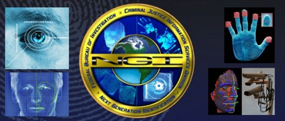
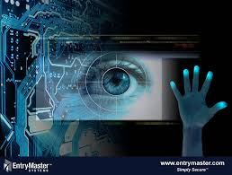

Tech VS Crime
Menu
Home Page

Biometric systems are becoming increasingly important for identifying known and suspected terrorists. The use of emerging biometric technologies as a tool to counter terrorist attacks and fight crime is on the rise and two driving forces are behind this breakthrough. The first was the realization that 7 out of the 19 hijackers in the September 11 attack were known to the authorities. These terrorists had used false identity papers to gain entry to the United States. If there was a biometric system in place, these terrorists could have been identified that they were using someone else’s identity to gain entry and could have been stopped. The second factor was the remarkable boost in computer processing power that allows speedy access between biometric devices and the databases that store the biometric data of individuals. With the increased speed, these databases are able to compare thousands of features in fractions of a second and provide useful answers within moments after a person has been detained or while an individual is still in custody.
Image: FBI now maintains the world’s largest database of biometrics and criminal history information NGI (Next Generation Identification) system. Fingerprinting was the first biometric modality to be proposed as a crime-fighting measure in the late 1800s. The FBI then computerized the process of matching fingerprints in the late 1900s. Since then law enforcement and forensic technologies have truly evolved. The FBI now maintains the world’s largest database of biometrics and criminal history information known as the Next Generation Identification (NGI) system. This system is the next level in FBI’s biometric identification services and criminal history information and addresses the evolving local, state, national as well as international criminal justice requirements.
